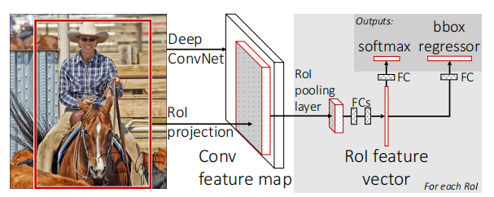
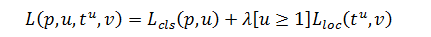

- 相较于 R-CNN 更快且更好
- 比 R-CNN 训练快9倍，测试快213倍
- 此前的 R-CNN 和 SPP-net 都是多阶段的训练，首先训练一个卷积层提取特征，fine-tune，然后训练 SVM 分类器。Fast R-CNN 提出了多任务损失的单阶段训练，训练可以更新所有网络层参数
网络架构与训练

将整个图像和一组候选框作为输入
首先仍使用卷积层和池化层去处理图像，得到特征。然后，对于每个候选框，RoI pooling layer 从对应框中的特征中提取固定长度的 feature vector，送到全连接中，分支成两个输出：一个是 K+1 （1指 background) 个类别的分类器（softmax），另外一个是对于 K 个类别的每一个类别输出 4 个实数，标识 假设是该类别的情况下 修正后检测框的位置。
RoI pooling layer
使用最大池化
简化版的 SPP layer，只有一个金字塔层。将矩形窗口内的特征转化为固定大小 $H \times W$ 的小特征图。
训练的方法
Fast R-CNN 能实现单阶段，是因为他能够用反向传播训练整个网络的权重。
此前的 R-CNN 和 SPP-net 不能够更新 CNN 部分的权重，是因为 region proposal 可能很大，SGD 的 batch size 假如说是128，那就是每次输入 128 个 region proposal，他们基本上来自于不同的图，并且大概率跟原图差不多大。那就跟训练 128 张完整的图差不多。算力跟不上。
Fast R-CNN 提出，我们用比较少的图，每次多选几个 region proposal。比如同样是 128，Fast R-CNN 选择用两张图，每张图上选 64 个检测框。因为同一张图只需要做一次卷积，可以共享参数，所以相当于快了 64 倍。
Loss 的选择

$L_{cls}(p,u) = -\log p_u$
第二项：
对于一个类别 $u$，首先有一个 true bounding-box $v$，然后有一个 predicted bounding-box $t^u$
$\lambda [u \geq 1]$ 当 $u \geq 1$ 是为 1，当 $u=0$ 时为 $0$，就是说 $0$ 类（background) 是不需要这一项 loss 的
具体的计算：

大概就是两个框差多少